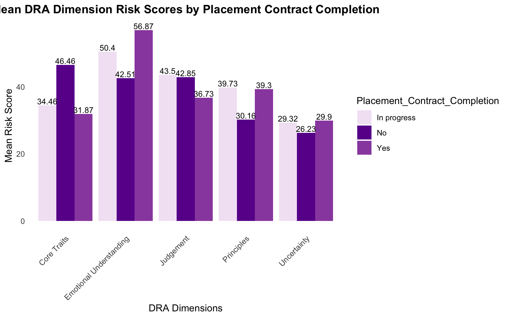
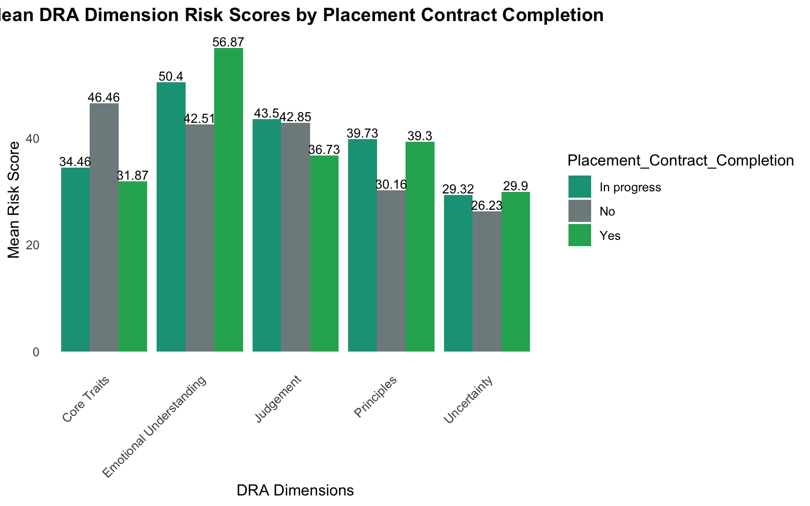
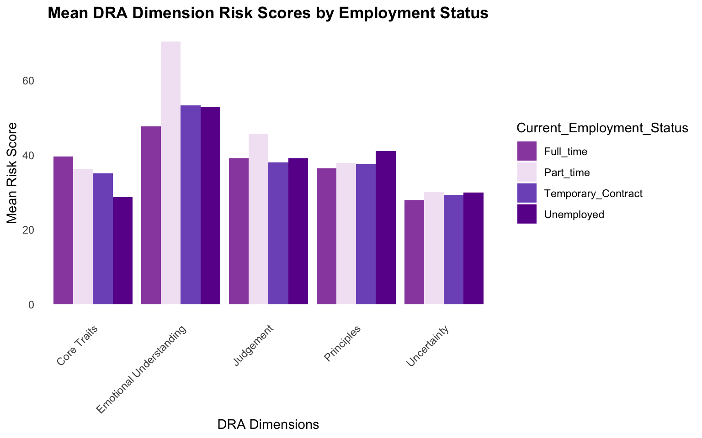
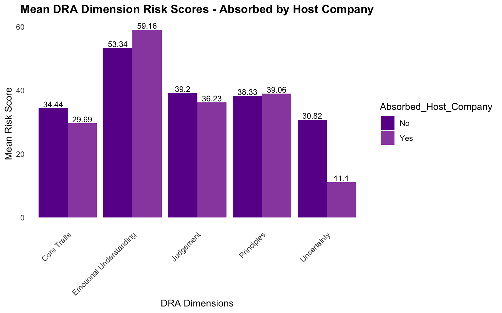
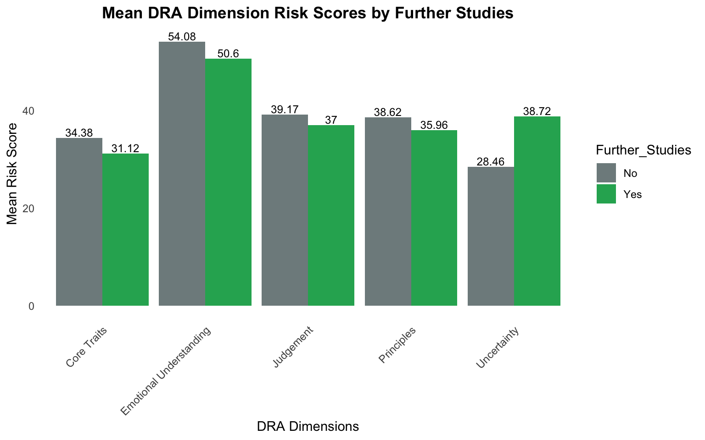
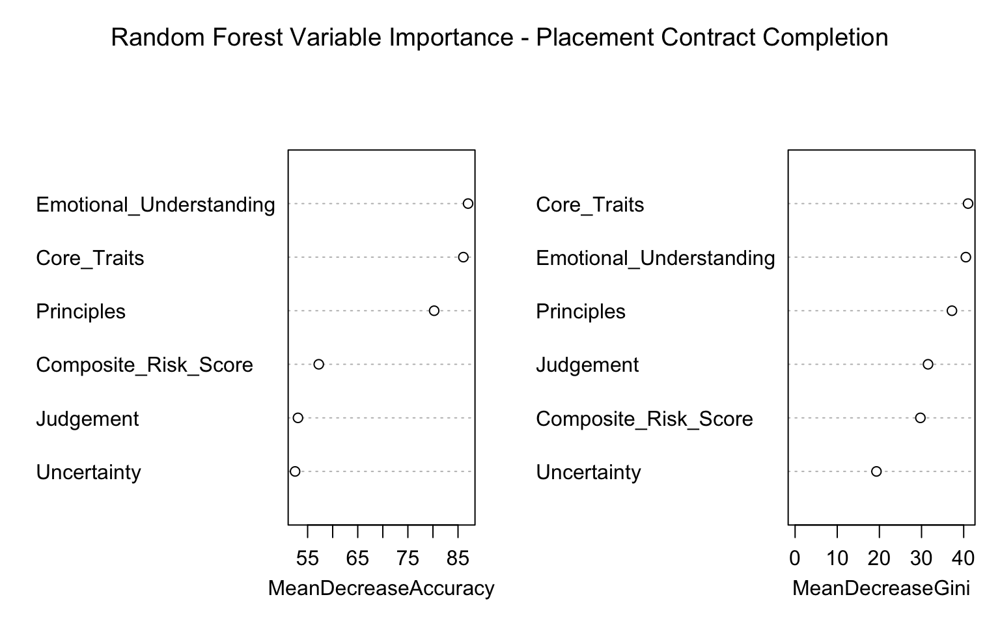
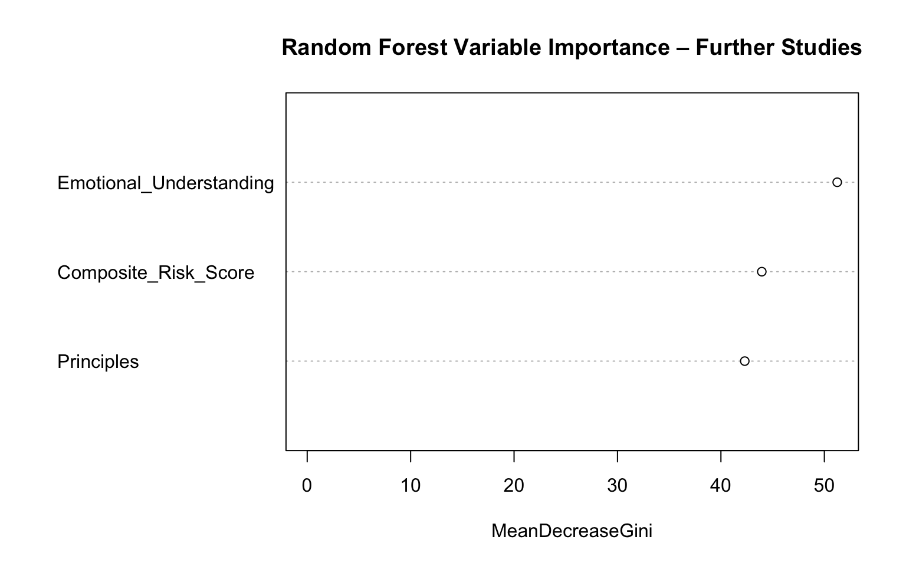
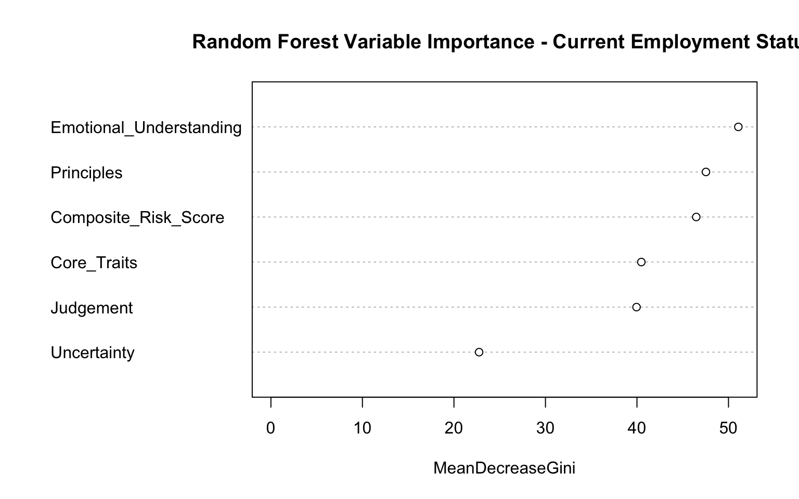
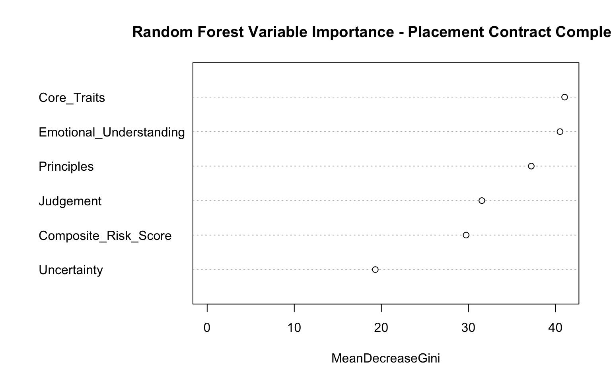

This report presents an example analysis of how psychometric assessment scores from the Dynamic Risk Assessment (DRA) relate to real-world employment and placement outcomes.
Background
Candidates were evaluated using a multi-hurdle assessment approach, where the DRA served as one of the screening tools used in the recruitment process. Following successful selection, a follow-up survey was administered to track key employment outcomes such as specialized training uptake, absorption by host companies, current employment status and pursuit of further studies.
This multi-hurdle approach introduces range restriction, a common data challenge in applied psychometrics and predictive validity studies. Range restriction occurs when predictors and outcomes are only observed for a pre-screened subgroup (successful candidates). This compresses variability in both predictors and criteria, which can attenuate correlations and underestimate the true predictive power of the assessment. All interpretations are therefore conditional on candidates who passed screening and were placed.
Data Cleaning & Preparation
Data preparation was performed locally to ensure no personally identifiable information was included in the public version. The process involved merging two data frames:
Work Placement Programme Survey Data — containing self-reported outcomes from 375 placed candidates.
DRA Data — containing assessment scores for a much larger pool (~130,000 candidates).
Key steps included:
Standardizing names to create a consistent merge key.
Removing duplicates in survey data (4 duplicates identified and dropped → 371 unique records).
Removing duplicates in DRA data by keeping only the most recent valid assessment date per candidate.
Performing an inner join on the merge key to retain only candidates present in both data sets (i.e., those screened, selected, placed, and surveyed).
Removing any remaining rows with missing values resulting in 217 complete cases.
This merged data set therefore only includes candidates who passed screening and were successfully placed. This is the sample of interest for evaluating post-placement predictive validity, however range restriction means that results reflect performance within the selected subgroup rather than the full applicant pool.
Purpose
The primary goal of this analysis is to evaluate the predictive validity of the DRA. In other words, whether DRA risk scores can meaningfully distinguish between different outcome groups and help forecast long-term success in placement and employment.
Methods Overview
Descriptive statistics and visual comparisons of risk scores across outcome categories
SMOTE oversampling to address class imbalance in predictive modelling
ROC curves to assess discrimination ability
Random forest modelling for classification and predictor importance
Important Notes on Data & Presentation
All data is simulated to match realistic distributions, correlations, and patterns from the original analysis. No real candidate or client information is included. Minor differences in subgroup averages or model performance compared to the original analysis are expected due to simulation noise.
To protect intellectual property, the names of the DRA dimensions have been generalized or renamed in this public version. The underlying constructs and relationships remain representative of the actual assessment.
This section provides an overview of the simulated data, including correlations among DRA dimensions and risk scores, outlier detection, and group comparisons across key outcomes.
Correlations Among DRA Dimensions & Risk Scores
The Spearman correlations show strong interrelationships among the DRA dimensions and risk components:
Risk Mitigators shows a strong, negative association with Risk Drivers (-0.77, p<0.001), as expected in the assessment design.
Similarly, the Composite Risk Score shows a strong, positive correlation with Risk Drivers (0.92, p<0.001) and a strong negative correlation with Risk Mitigators (-0.95, p<0.001).
Weak or non-significant correlations (e.g., Uncertainty with Principles, r=0.00) highlight independent aspects of the profile.
Employees who are still completing their placement contract had the lowest average composite risk score (31.49) whereas employees who did not complete their placement contracts had the highest average composite risk score (36.06).
The most common employment status is Temporary Contract (54.4%), followed by Unemployed (25.8%). Self employed was excluded due to rarity (n=1) resulting in a sample size of 216.
Employees with part-time contracts have the highest average composite risk (38.52), while candidates who are currently unemployed have the lowest (28.59).
Only 7.4% of employees were absorbed by their respective host company. However, this variable is likely skewed because the economy is saturated and businesses cannot accommodate more employees rendering this criterion relatively less useful for prediction.
Only 8.8% pursued further studies however this is likely influenced by various external factors such as age, current level of education, and affordability.
Placement Contract Completion: Mean DRA Dimension Scores
In progress
No
Yes
Core Traits
34.46
46.46
31.87
Emotional Understanding
50.40
42.51
56.87
Judgement
43.50
42.85
36.73
Principles
39.73
30.16
39.30
Uncertainty
29.32
26.23
29.90
Show code
PC_dimension_summary_long <- PC_dimension_summary %>%pivot_longer(cols =c(2:6), names_to ="Dimensions", values_to ="Mean_Score") %>% dplyr::mutate(Dimensions =as.factor(Dimensions))ggplot(PC_dimension_summary_long, aes(x = Dimensions, y = Mean_Score, fill = Placement_Contract_Completion)) +geom_bar(stat ="identity", position ="dodge") +geom_text(aes(label =round(Mean_Score, 2)),position =position_dodge(width =0.9),vjust =-0.2, size =3.2, color ="black" ) +labs(x ="DRA Dimensions", y ="Mean Risk Score", title ="Mean DRA Dimension Risk Scores by Placement Contract Completion") +theme_minimal() +theme(legend.position ="right",plot.title =element_text(hjust =0.5, face ="bold"),panel.grid.major =element_blank(), panel.grid.minor =element_blank(), axis.text.x =element_text(angle =45, hjust =1)) +scale_fill_manual(values =c("No"="#6A1B9A", "Yes"="#9A4EAE","In progress"="#F3E5F5" ))

Show code
STC_dimension_summary <- raw_data %>%group_by(Specialised_Training_Completion) %>%summarise(`Core Traits`=mean(Core_Traits, na.rm =TRUE),`Emotional Understanding`=mean(Emotional_Understanding, na.rm =TRUE),`Judgement`=mean(Judgement, na.rm =TRUE),`Principles`=mean(Principles, na.rm =TRUE),`Uncertainty`=mean(Uncertainty, na.rm =TRUE) )# Transpose: dimensions as rows, groups as columnsSTC_dimension_summary_t <- STC_dimension_summary %>%column_to_rownames(var ="Specialised_Training_Completion") %>%t() %>%as.data.frame()kable( STC_dimension_summary_t,digits =2, caption ="Specialised Training Completion: Mean DRA Dimension Scores")
Specialised Training Completion: Mean DRA Dimension Scores
No
Yes
Core Traits
39.84
32.94
Emotional Understanding
50.83
54.36
Judgement
41.13
38.55
Principles
39.63
38.13
Uncertainty
38.06
27.62
Show code
STC_dimension_summary_long <- STC_dimension_summary %>%pivot_longer(cols =c(2:6), names_to ="Dimensions", values_to ="Mean_Score") %>% dplyr::mutate(Dimensions =as.factor(Dimensions))ggplot(STC_dimension_summary_long, aes(x = Dimensions, y = Mean_Score, fill = Specialised_Training_Completion)) +geom_bar(stat ="identity", position ="dodge") +geom_text(aes(label =round(Mean_Score, 2)),position =position_dodge(width =0.9),vjust =-0.2, size =3.2, color ="black" ) +labs(x ="DRA Dimensions", y ="Mean Risk Score", title ="Mean DRA Dimension Risk Scores by Specialised Training Completion") +theme_minimal() +theme(legend.position ="right",plot.title =element_text(hjust =0.5, face ="bold"),panel.grid.major =element_blank(), panel.grid.minor =element_blank(), axis.text.x =element_text(angle =45, hjust =1)) +scale_fill_manual(values =c("No"="#6A1B9A", "Yes"="#9A4EAE"))

Show code
Employment_dimension_summary <- raw_data %>%group_by(Current_Employment_Status) %>%summarise(`Core Traits`=mean(Core_Traits, na.rm =TRUE),`Emotional Understanding`=mean(Emotional_Understanding, na.rm =TRUE),`Judgement`=mean(Judgement, na.rm =TRUE),`Principles`=mean(Principles, na.rm =TRUE),`Uncertainty`=mean(Uncertainty, na.rm =TRUE) )# Transpose: dimensions as rows, groups as columnsEmployment_dimension_summary_t <- Employment_dimension_summary %>%column_to_rownames(var ="Current_Employment_Status") %>%# make group column as row namest() %>%# transposeas.data.frame()kable( Employment_dimension_summary_t,digits =2, caption ="Current Employment Status: Mean DRA Dimension Scores")
Current Employment Status: Mean DRA Dimension Scores
Full_time
Part_time
Temporary_Contract
Unemployed
Core Traits
39.63
36.29
35.13
28.71
Emotional Understanding
47.63
70.42
53.26
52.95
Judgement
39.16
45.60
38.01
39.06
Principles
36.48
37.88
37.57
41.12
Uncertainty
27.93
30.06
29.29
29.98
Show code
Employment_dimension_summary_long <- Employment_dimension_summary %>%pivot_longer(cols =c(2:6), names_to ="Dimensions", values_to ="Mean_Score") %>% dplyr::mutate(Dimensions =as.factor(Dimensions))ggplot(Employment_dimension_summary_long, aes(x = Dimensions, y = Mean_Score, fill = Current_Employment_Status)) +geom_bar(stat ="identity", position =position_dodge(width =0.9)) +labs(x ="DRA Dimensions", y ="Mean Risk Score", title ="Mean DRA Dimension Risk Scores by Employment Status") +theme_minimal() +theme(legend.position ="right",plot.title =element_text(hjust =0.5, face ="bold"),panel.grid.major =element_blank(), panel.grid.minor =element_blank(),axis.text.x =element_text(angle =45, hjust =1)) +scale_fill_manual(values =c("Unemployed"="#6A1B9A","Full_time"="#9A4EAE","Part_time"="#F3E5F5","Temporary_Contract"="#7E57C2" ))

Show code
AH_dimension_summary <- raw_data %>%group_by(Absorbed_Host_Company) %>%summarise(`Core Traits`=mean(Core_Traits, na.rm =TRUE),`Emotional Understanding`=mean(Emotional_Understanding, na.rm =TRUE),`Judgement`=mean(Judgement, na.rm =TRUE),`Principles`=mean(Principles, na.rm =TRUE),`Uncertainty`=mean(Uncertainty, na.rm =TRUE) )# Transpose: dimensions as rows, groups as columnsAH_dimension_summary_t <- AH_dimension_summary %>%column_to_rownames(var ="Absorbed_Host_Company") %>%t() %>%as.data.frame()kable( AH_dimension_summary_t,digits =2, caption ="Absorbed by Host Company: Mean DRA Dimension Scores")
Absorbed by Host Company: Mean DRA Dimension Scores
No
Yes
Core Traits
34.44
29.69
Emotional Understanding
53.34
59.16
Judgement
39.20
36.23
Principles
38.33
39.06
Uncertainty
30.82
11.10
Show code
AH_dimension_summary_long <- AH_dimension_summary %>%pivot_longer(cols =c(2:6), names_to ="Dimensions", values_to ="Mean_Score") %>% dplyr::mutate(Dimensions =as.factor(Dimensions))ggplot(AH_dimension_summary_long, aes(x = Dimensions, y = Mean_Score, fill = Absorbed_Host_Company)) +geom_bar(stat ="identity", position ="dodge") +geom_text(aes(label =round(Mean_Score, 2)),position =position_dodge(width =0.9),vjust =-0.2, size =3.2, color ="black" ) +labs(x ="DRA Dimensions", y ="Mean Risk Score", title ="Mean DRA Dimension Risk Scores - Absorbed by Host Company") +theme_minimal() +theme(legend.position ="right",plot.title =element_text(hjust =0.5, face ="bold"),panel.grid.major =element_blank(), panel.grid.minor =element_blank(), axis.text.x =element_text(angle =45, hjust =1)) +scale_fill_manual(values =c("No"="#6A1B9A", "Yes"="#9A4EAE"))

Show code
FS_dimension_summary <- raw_data %>%group_by(Further_Studies) %>%summarise(`Core Traits`=mean(Core_Traits, na.rm =TRUE),`Emotional Understanding`=mean(Emotional_Understanding, na.rm =TRUE),`Judgement`=mean(Judgement, na.rm =TRUE),`Principles`=mean(Principles, na.rm =TRUE),`Uncertainty`=mean(Uncertainty, na.rm =TRUE) )# Transpose: dimensions as rows, groups as columnsFS_dimension_summary_t <- FS_dimension_summary %>%column_to_rownames(var ="Further_Studies") %>%t() %>%as.data.frame()kable( FS_dimension_summary_t,digits =2, caption ="Further Studies: Mean DRA Dimension Scores")
Further Studies: Mean DRA Dimension Scores
No
Yes
Core Traits
34.38
31.12
Emotional Understanding
54.08
50.60
Judgement
39.17
37.00
Principles
38.62
35.96
Uncertainty
28.46
38.72
Show code
FS_dimension_summary_long <- FS_dimension_summary %>%pivot_longer(cols =c(2:6), names_to ="Dimensions", values_to ="Mean_Score") %>% dplyr::mutate(Dimensions =as.factor(Dimensions))ggplot(FS_dimension_summary_long, aes(x = Dimensions, y = Mean_Score, fill = Further_Studies)) +geom_bar(stat ="identity", position ="dodge") +geom_text(aes(label =round(Mean_Score, 2)),position =position_dodge(width =0.9),vjust =-0.2, size =3.2, color ="black" ) +labs(x ="DRA Dimensions", y ="Mean Risk Score", title ="Mean DRA Dimension Risk Scores by Further Studies") +theme_minimal() +theme(legend.position ="right",plot.title =element_text(hjust =0.5, face ="bold"),panel.grid.major =element_blank(), panel.grid.minor =element_blank(), axis.text.x =element_text(angle =45, hjust =1)) +scale_fill_manual(values =c("No"="#6A1B9A", "Yes"="#9A4EAE"))

Handling Class Imbalance with SMOTE
Class imbalance is a common and often critical challenge in predictive modelling and data science.
In many cases, the number of instances in one class (the minority class) is significantly smaller than the other (the majority class).
Common examples include:
Adverse drug reaction prediction: Serious reactions occur in a tiny percentage of patients.
Credit card fraud: ~0.1–0.5% of transactions are fraudulent (minority class = fraud), while 99.5%+ are legitimate.
Equipment failure prediction: Machine breakdowns or defects occur in <1–5% of operational cycles.
This imbalance (i.e., where one outcome is typically less frequent than another) is natural and expected in real-world data. SMOTE (or other balancing techniques) is frequently applied in these cases to help models learn meaningful patterns from the minority class without being overwhelmed by the majority.
To address class imbalance before running predictive models, we applied the Synthetic Minority Over-sampling Technique (SMOTE).
SMOTE works by:
Identifying minority class samples.
For each minority sample, finding its k nearest neighbours in feature space (typically k=5).
Generating new synthetic data points along the line segments joining the minority sample to its neighbours.
Repeating this process until the classes are (approximately) equally represented.
This approach:
Increases the number of minority examples without simply duplicating existing ones (which can cause over-fitting).
Creates realistic synthetic samples that lie within the distribution of the original data.
Improves model learning on rare classes without discarding majority-class information.
By balancing the classes with SMOTE prior to training models, we ensure more reliable and fair performance evaluation, particularly for minority outcomes such as non-completion of specialized training or not pursuing further studies.
Show code
# Each of the outcome variables is treated separately as the target for SMOTE.# After applying SMOTE for one target, you get a new balanced data set only for that target. Thus, you end up with five separate balanced data sets (one for each outcome variable).# Drop empty levels after filtering. smote_data <- raw_data %>%mutate(Current_Employment_Status =droplevels(Current_Employment_Status))# Apply SMOTE for each target variable separately# ────────────────────────────────────────────────────────────────# 1. Placement_Contract_Completion set.seed(2025)balanced_contract <-smotenc(df = smote_data, # full data framevar ="Placement_Contract_Completion", # target column name (must be factor)k =5, # nearest neighborsover_ratio =1# 1 = balance to 1:1; >1 oversamples minority more)kable(balanced_contract %>% dplyr::select(c(Placement_Contract_Completion)) %>%group_by(Placement_Contract_Completion) %>% dplyr::summarise(count =n()))
Placement_Contract_Completion
count
In progress
142
No
142
Yes
142
After applying SMOTE, all classes (i.e., In progress; No; Yes) for Placement Contract Completion are equally represented.
Show code
set.seed(2025)balanced_training <-smotenc(df = smote_data, var ="Specialised_Training_Completion", k =5, over_ratio =1)kable(balanced_training %>% dplyr::select(c(Specialised_Training_Completion)) %>%group_by(Specialised_Training_Completion) %>% dplyr::summarise(count =n()))
Specialised_Training_Completion
count
No
180
Yes
180
Show code
set.seed(2025)balanced_employment_status <-smotenc(df = smote_data, var ="Current_Employment_Status", k =5, over_ratio =1)kable(balanced_employment_status %>% dplyr::select(c(Current_Employment_Status)) %>%group_by(Current_Employment_Status) %>% dplyr::summarise(count =n()))
Current_Employment_Status
count
Full_time
118
Part_time
118
Temporary_Contract
118
Unemployed
118
Show code
set.seed(2025)balanced_studies <-smotenc(df = smote_data, var ="Further_Studies", k =5, over_ratio =1)kable(balanced_studies %>% dplyr::select(c(Further_Studies)) %>%group_by(Further_Studies) %>% dplyr::summarise(count =n()))
Further_Studies
count
No
197
Yes
197
Analysis of Predictive Performance Using ROC Curves
Logistic regression models were used to examine the extent to which three DRA variables (i.e., predictors) could discriminate between two binary outcomes.
Two outcomes selected for this analysis:
Specialised Training Completion (Yes / No)
Further Studies (Yes / No)
Predictors Used
The models use these three variables:
Composite Risk Score
Principles
Emotional Understanding
For each outcome, the data were split into training (80%) and test (20%) sets using stratified sampling to maintain class proportions. Logistic regression models were fitted on the training data, and performance was evaluated on the held-out test set.
Key Metric Definitions in Context
AUC (Area Under the ROC Curve): Measures overall ability to rank candidates correctly. AUC = 0.5 means no discrimination (random guessing); AUC > 0.7–0.8 is generally useful in applied settings.
Accuracy: Overall % correct predictions (TP + TN) / total
Precision (for Yes): Of all candidates predicted to complete training / pursue further studies, what % were actually Yes? (TP / (TP + FP))
Recall (for Yes): What proportion of actual Yes cases does the model correctly identify as Yes? Formula: TP / (TP + FN)
True Positives (TP): 24 candidates correctly predicted as Yes
Insight: Similar to training completion, the three predictors explain almost nothing about whether employees pursue further studies. While ROC curves provide a strong initial assessment of how well predictors separate classes, we extended this analysis to random forest modelling as this approach incorporates multiple predictors, captures non-linear relationships and interactions, and provides robust predictions through ensemble averaging and built-in variable importance rankings.
Predictive Modeling - Random Forest
Random forests, which combine multiple decision trees to improve predictive accuracy and reduce over-fitting, are a powerful ensemble machine learning method for classification and regression.
Random Forest Model 1 - Predicting Further Studies (binary)
A binary random forest model (2000 trees) was trained to predict whether candidates pursued further studies after placement, using three key predictors: Composite Risk Score, Principles, and Emotional Understanding. The model was evaluated on a held-out 30% test set.
Show code
# Binary Random Forest for Further Studies# Prepare databalanced_studies_RF_df <- balanced_studiespredictors <-c("Composite_Risk_Score", "Principles", "Emotional_Understanding")# Train/test split (70/30) – reproducibleset.seed(2025)train_index <-createDataPartition( balanced_studies_RF_df$Further_Studies,p =0.7,list =FALSE)train_data <- balanced_studies_RF_df[train_index, ]test_data <- balanced_studies_RF_df[-train_index, ]# Fit binary random forestrf_model_binary <-randomForest(x = train_data[, predictors],y = train_data$Further_Studies,ntree =2000,mtry =floor(sqrt(length(predictors))),importance =TRUE,proximity =FALSE,na.action = na.roughfix,seed =2025)# ── Predictions on test data ──────────────────────────────────────────────────────rf_pred_class <-predict(rf_model_binary, newdata = test_data[, predictors])rf_pred_prob <-predict(rf_model_binary, newdata = test_data[, predictors], type ="prob")[, "Yes"] # ── Confusion Matrix (binary) ─────────────────────────────────────────────────────cm_caret <-confusionMatrix(data = rf_pred_class,reference = test_data$Further_Studies,positive ="Yes")cat("\nConfusion Matrix (Test Set):\n")
Confusion Matrix (Test Set):
Show code
print(cm_caret$table)
Reference
Prediction No Yes
No 42 12
Yes 17 47
Confusion Matrix Breakdown
This shows how the model classified the test set (using 0.5 probability threshold).
True Negatives (TN): 42 candidates correctly predicted as No
False Negatives (FN): 12 candidates wrongly predicted as No (actually Yes)
# Plot ROCggroc(roc_obj, legacy.axes =TRUE) +geom_abline(slope =1, intercept =0, linetype ="dashed", color ="grey50") +labs(title ="ROC Curve – Further Studies Prediction",subtitle =paste("AUC =", round(auc(roc_obj), 3)),x ="1 – Specificity",y ="Sensitivity" ) +annotate("text", x =0.75, y =0.25,label =paste("AUC =", round(auc(roc_obj), 3)),size =5, color ="black") +theme_minimal(base_size =13) +coord_equal(ratio =1)

AUC: 0.881 — strong discriminative ability.
Variable Importance
Variable importance in random forests quantifies how much each predictor contributes to the model’s performance.
How Variable Importance is Calculated:
Gini Impurity: At each node split in a tree, Gini measures how “pure” the classes are after the split (lower Gini = better split).
MeanDecreaseGini: For each predictor, sum the total Gini decrease across all splits where it was used, then average over all trees. High value = the feature frequently leads to strong purity improvements (i.e., it’s informative for classification).
MeanDecreaseAccuracy: Permutes the feature and measures drop in accuracy (another view of importance).
How This Increases Prediction:
Feature Selection: High-importance variables (e.g. Emotional_Understanding at 51.2) are the “weights” — they drive splits more often, making the model focus on what matters, improving accuracy.
Reduces Noise: Low-importance features (e.g. Principles at 42.3) contribute less, preventing over-fitting to irrelevant signals.
Overall, this boosts prediction by prioritizing strong discriminators leading to more reliable outcomes.
The plot below shows MeanDecreaseGini — a measure of how much each predictor reduces node impurity (class mixing) across all 2000 trees in the random forest. Higher values indicate greater importance / weight in predicting pursuit of further studies.
Show code
# Plot importancerandomForest::varImpPlot( rf_model_binary,main ="Random Forest Variable Importance – Further Studies", type =2)

Comparison: ROC Curve vs Random Forest for Further Studies
The random forest model achieved a substantially higher AUC of 0.881, overall accuracy of 75.4%, precision of 73.4% and recall of 79.7% for the “Yes” class.
Why the boost in prediction?
The boost in prediction from the random forest (AUC 0.881 vs. ROC/logistic regression’s 0.512) stems from its ability to model the same predictors more effectively than logistic regression. While logistic regression assumes linear relationships and can struggle with interactions or non-linear patterns, random forest builds an ensemble of 2000 decision trees that capture complex, non-linear effects, feature interactions, and variability — leading to greater robustness, reduced over-fitting, and improved generalization on the test set.
Random Forest Model 2: Predicting Employment Status (multi-class)
A random forest model (2000 trees) was trained to predict Employment Status using the following predictors: Core Traits, Emotional Understanding, Judgement, Principles, Uncertainty, and Composite Risk Score.
Show code
balanced_employment_status_RF_df <- balanced_employment_status predictors <-c("Core_Traits", "Emotional_Understanding", "Judgement", "Principles", "Uncertainty", "Composite_Risk_Score") ############################################################# Train / test split (70 / 30) ############################################################set.seed(2025)train_index <-createDataPartition( balanced_employment_status_RF_df$Current_Employment_Status, p =0.7, list =FALSE)train_data <- balanced_employment_status_RF_df[train_index, ]test_data <- balanced_employment_status_RF_df[-train_index, ]############################################################# Fit Random Forest model (multi-class)############################################################rf_model <-randomForest(x = train_data[, predictors], y = train_data$Current_Employment_Status,ntree =2000, # number of treesmtry =floor(sqrt(length(predictors))), # default for classificationimportance =TRUE, # for variable importanceproximity =FALSE, na.action = na.roughfix, seed =2025)############################################################# Predictions on test data############################################################rf_pred_class <-predict(rf_model, newdata = test_data[, predictors])rf_pred_prob <-predict( rf_model,newdata = test_data[, predictors],type ="prob")############################################################# Confusion matrix & performance metrics############################################################cm_caret <-confusionMatrix(data = rf_pred_class,reference = test_data$Current_Employment_Status)cat("\nConfusion Matrix (Test Set):\n")
This means that if you pick one person from each class at random, the model assigns higher probability to the correct class 87.5% of the time. In other words, the model is very good at assigning higher probabilities to the correct class, even when it makes classification errors.
The plot below shows MeanDecreaseGini — a measure of how much each predictor reduces node impurity (class mixing) across all 2000 trees in the random forest. Higher values indicate greater importance / weight in predicting Employment Status.
These three features carry the majority of predictive power, suggesting that they consistently help separate employment classes.
Show code
randomForest::varImpPlot( rf_model,main ="Random Forest Variable Importance - Current Employment Status",n.var =6, # show top 6 predictors. type =2# type = 2 for Gini. )

Random Forest Model 3: Predicting Work Placement Contract (multi-class)
A random forest model (2000 trees) was trained to predict Work Placement Contract Completion using the same six predictors: Core Traits, Emotional Understanding, Judgement, Principles, Uncertainty, and Composite Risk Score.
Show code
# Random Forests for Work_Placement_Contract balanced_contract_RF_df <- balanced_contract predictors <-c("Core_Traits", "Emotional_Understanding", "Judgement", "Principles", "Uncertainty", "Composite_Risk_Score") ############################################################# Train / test split (70 / 30) ############################################################set.seed(2025)train_index <-createDataPartition( balanced_contract_RF_df$Placement_Contract_Completion, p =0.7, list =FALSE)train_data <- balanced_contract_RF_df[train_index, ]test_data <- balanced_contract_RF_df[-train_index, ]############################################################# Fit Random Forest model (multi-class)############################################################rf_model <-randomForest(x = train_data[, predictors], y = train_data$Placement_Contract_Completion,ntree =2000, # number of treesmtry =floor(sqrt(length(predictors))), # default for classificationimportance =TRUE, # for variable importanceproximity =FALSE, na.action = na.roughfix,seed =2025)############################################################# Predictions on test data############################################################rf_pred_class <-predict(rf_model, newdata = test_data[, predictors])rf_pred_prob <-predict( rf_model,newdata = test_data[, predictors],type ="prob")############################################################# Confusion matrix & performance metrics############################################################cm_caret <-confusionMatrix(data = rf_pred_class,reference = test_data$Placement_Contract_Completion)cat("\nConfusion Matrix (Test Set):\n")
Confusion Matrix (Test Set):
Show code
print(cm_caret$table)
Reference
Prediction In progress No Yes
In progress 29 3 14
No 3 33 5
Yes 10 6 23
Interpretation of the Confusion Matrix (Test Set)
In progress: 29 correctly predicted out of 42 actual cases.
No: 33 correctly predicted out of 42 actual cases.
Yes: 23 correctly predicted out of 42 actual cases.
The model is very good at ranking probabilities correctly (AUC = 0.847) - if you pick one person from each class at random, the model assigns the highest probability to the correct class in 84.7% of cases.
Emotional Understanding (40.5) - nearly as influential
Principles (37.2)
In the second model, these are the three features that carry the majority of predictive power. In other words, they are the most important variables for distinguishing work placement contract completion.
Show code
randomForest::varImpPlot( rf_model,main ="Random Forest Variable Importance - Placement Contract Completion",n.var =6, # show top 6 predictors. type =2# type = 2 for Gini. )

Summary and Conclusion
This analysis evaluated the predictive validity of the Dynamic Risk Assessment (DRA) in relation to key employment outcomes. Using synthetic data designed to mirror realistic distributions and patterns from the original data set, we conducted descriptive statistics, visual comparisons, ROC curve evaluations, and random forest modelling.
The DRA provides valuable insights for recruitment and placement, with its composite risk score and dimensions (particularly Emotional Understanding and Principles) effectively distinguishing between outcome groups in many cases. The analysis supports its use in multi-hurdle screening, where it helps identify low-risk candidates for stable employment pathways. Limitations such as range restriction and the synthetic nature of the data mean results should be viewed as directional rather than definitive. Future work could explore integrating DRA scores with additional data sources (e.g., engagement metrics) to enhance long-term predictions.
Source Code
---title: "Psychometric Risk Assessment: Employment & Placement Outcomes"authors: Caitlin Buenk, Tilabo Williamson, and Jurgen Becker (Project Lead) - AX Consult Group. format: html: theme: cosmo code-fold: true code-summary: "Show code" code-tools: true toc: true toc-depth: 3 fig-width: 8 fig-height: 5 output-dir: docs---::: {.text-center style="margin-bottom: 2em;"}{width="180" fig-align="center"}:::<style>/* Justify only paragraphs (and list items for consistency) */p, li {text-align: justify;hyphens: auto;-webkit-hyphens: auto; -ms-hyphens: auto;}/* Optional: Slightly improve line spacing */p {line-height: 1.6;}/* Keep headings, code, tables, etc. left-aligned */h1, h2, h3, h4, h5, h6,pre, code, table, th, td,blockquote {text-align: left;}/* Ensure white background */body {background-color: white;}</style>This report presents an example analysis of how psychometric assessment scores from the **Dynamic Risk Assessment (DRA)** relate to real-world employment and placement outcomes.### BackgroundCandidates were evaluated using a **multi-hurdle assessment approach**, where the DRA served as one of the screening tools used in the recruitment process. Following successful selection, a follow-up survey was administered to track key employment outcomes such as specialized training uptake, absorption by host companies, current employment status and pursuit of further studies.This multi-hurdle approach introduces **range restriction**, a common data challenge in applied psychometrics and predictive validity studies. Range restriction occurs when predictors and outcomes are only observed for a pre-screened subgroup (successful candidates). This compresses variability in both predictors and criteria, which can attenuate correlations and underestimate the true predictive power of the assessment. All interpretations are therefore conditional on candidates who passed screening and were placed.### Data Cleaning & PreparationData preparation was performed locally to ensure no personally identifiable information was included in the public version. The process involved merging two data frames:1. **Work Placement Programme Survey Data** — containing self-reported outcomes from 375 placed candidates.2. **DRA Data** — containing assessment scores for a much larger pool (\~130,000 candidates).Key steps included:- Standardizing names to create a consistent merge key.- Removing duplicates in survey data (4 duplicates identified and dropped → 371 unique records).- Removing duplicates in DRA data by keeping only the most recent valid assessment date per candidate.- Performing an **inner join** on the merge key to retain only candidates present in both data sets (i.e., those screened, selected, placed, and surveyed).- Removing any remaining rows with missing values resulting in **217 complete cases**.This merged data set therefore only includes candidates who passed screening and were successfully placed. This is the sample of interest for evaluating post-placement predictive validity, however range restriction means that results reflect performance **within the selected subgroup** rather than the full applicant pool.### PurposeThe primary goal of this analysis is to evaluate the **predictive validity** of the DRA. In other words, whether DRA risk scores can meaningfully distinguish between different outcome groups and help forecast long-term success in placement and employment.### Methods Overview- **Descriptive statistics** and visual comparisons of risk scores across outcome categories- **SMOTE** oversampling to address class imbalance in predictive modelling- **ROC curves** to assess discrimination ability- **Random forest** modelling for classification and predictor importance### Important Notes on Data & Presentation**All data is simulated** to match realistic distributions, correlations, and patterns from the original analysis. No real candidate or client information is included. Minor differences in subgroup averages or model performance compared to the original analysis are expected due to simulation noise.**To protect intellectual property**, the names of the DRA dimensions have been generalized or renamed in this public version. The underlying constructs and relationships remain representative of the actual assessment.```{r}library(pacman)p_load(dplyr, readxl, writexl, ggplot2, tidyr, lavaan, psych, tidyverse, knitr, ggcorrplot, jtools, Hmisc, rempsyc, RColorBrewer, smotefamily, caret, pROC, themis, recipes, yardstick, randomForest, copula, reshape2, stringr) raw_data <- readxl::read_excel("simulated_candidate_data.xlsx")dim(raw_data)raw_data <- raw_data %>% dplyr::mutate(Work_Readiness_Completion =as.factor(Work_Readiness_Completion), Placement_Contract_Completion =as.factor(Placement_Contract_Completion), Specialised_Training_Completion =as.factor(Specialised_Training_Completion), Current_Employment_Status =as.factor(Current_Employment_Status), Absorbed_Host_Company =as.factor(Absorbed_Host_Company), Further_Studies =as.factor(Further_Studies))```The sample consists of 217 employees.## Descriptive StatisticsThis section provides an overview of the simulated data, including correlations among DRA dimensions and risk scores, outlier detection, and group comparisons across key outcomes.### Correlations Among DRA Dimensions & Risk ScoresThe Spearman correlations show strong interrelationships among the DRA dimensions and risk components:- Risk Mitigators shows a strong, negative association with Risk Drivers (-0.77, p\<0.001), as expected in the assessment design.- Similarly, the Composite Risk Score shows a strong, positive correlation with Risk Drivers (0.92, p\<0.001) and a strong negative correlation with Risk Mitigators (-0.95, p\<0.001).Weak or non-significant correlations (e.g., Uncertainty with Principles, r=0.00) highlight independent aspects of the profile.```{r}correlations <- raw_data %>% dplyr::select(c(1:8))flattenCorrMatrix <-function(cormat, pmat) { ut <-upper.tri(cormat)data.frame(row=rownames(cormat)[row(cormat)[ut]],column=rownames(cormat)[col(cormat)[ut]],cor=(cormat)[ut],p=pmat[ut] )}cor_sig <- Hmisc::rcorr(as.matrix(correlations), type ="spearman") correlation_table <-flattenCorrMatrix(cor_sig$r, cor_sig$P) %>%mutate(cor =round(cor, 3), p =round(p, 3) ) correlation_table %>%mutate(cor =round(cor, 3),p =round(p, 3),``=case_when(p <0.001~"***", p <0.01~"**", p <0.05~"*", TRUE~"") ) %>%select(`Variable 1`= row, `Variable 2`= column, Correlation = cor, `p-value`= p, Significance =``) %>%kable(caption ="Spearman Correlations (significant p < 0.05)",digits =3,align =c("l", "l", "r", "r", "c") )``````{r warning = FALSE}model.matrix(~0+., correlations) %>%cor(use='pairwise.complete.obs', method ="spearman") %>%ggcorrplot(sig.level=0.5, hc.order =TRUE, show.diag =FALSE, type ="lower", lab_size=0.5) +xlab("Variable 1") +ylab("Variable 2") +theme_apa(legend.pos ="right", legend.use.title =FALSE,legend.font.size =12, x.font.size =12, y.font.size =12,facet.title.size =12, remove.y.gridlines =TRUE,remove.x.gridlines =TRUE) +theme(axis.text.x =element_text(angle =45, hjust =1))```### Checking for Outliers```{r}# Detecting outliers using the IQR method Q1 <-quantile(raw_data$Composite_Risk_Score, 0.25)Q3 <-quantile(raw_data$Composite_Risk_Score, 0.75)IQR <- Q3 - Q1outliers <-which(raw_data$Composite_Risk_Score< (Q1 -1.5* IQR) | raw_data$Composite_Risk_Score > (Q3 +1.5* IQR))if (length(outliers) >0) {# Extract the values of outliers outlier_values <- raw_data$Composite_Risk_Score[outliers]# Print valuesprint(raw_data)} else {print("No outliers were found using the IQR method.")}```No outliers were detected in the Composite Risk Score using the IQR method, suggesting the data is free from extreme values that could skew results.### Work Readiness Completion```{r}raw_data %>% dplyr::select(Work_Readiness_Completion) %>%na.omit() %>%group_by(Work_Readiness_Completion) %>%summarise(Count =n()) %>%ungroup() %>%mutate(Percentage =round(Count /sum(Count) *100, 1),Percentage =paste0(Percentage, "%") ) %>%kable(caption ="Work Readiness Completion",align =c("l", "r", "r") )```Since all 217 candidates completed the work readiness assessment, this variable was excluded for predictive analysis.### Placement Contract Completion```{r}raw_data %>% dplyr::select(Placement_Contract_Completion) %>%na.omit() %>%group_by(Placement_Contract_Completion) %>%summarise(Count =n()) %>%ungroup() %>%mutate(Percentage =round(Count /sum(Count) *100, 1),Percentage =paste0(Percentage, "%") ) %>%kable(caption ="Placement Contract Completion",align =c("l", "r", "r") )```The majority (65.7%) completed their placement contract, with 23.1% still in progress and 11.1% not completing.```{r}Placement_Contract_Completion_Means <- raw_data %>% dplyr::select(c(Placement_Contract_Completion, Composite_Risk_Score)) %>%na.omit() %>%group_by(Placement_Contract_Completion) %>%summarise(Mean_Composite_Risk =mean(Composite_Risk_Score)) %>%arrange(Mean_Composite_Risk) %>% dplyr::mutate(Mean_Composite_Risk =round(Mean_Composite_Risk, 2))kable(Placement_Contract_Completion_Means)```Employees who are still completing their placement contract had the lowest average composite risk score (31.49) whereas employees who did not complete their placement contracts had the highest average composite risk score (36.06).```{r}ggplot(raw_data,aes(x = Placement_Contract_Completion,y = Composite_Risk_Score,fill = Placement_Contract_Completion)) +geom_boxplot(outlier.shape =NA, width =0.55,color ="grey") +labs(title ="Composite Risk Score Distribution: Placement Contract Completion",subtitle ="Higher scores indicate greater overall risk",x ="Placement Contract Completion",y ="Composite Risk Score" ) +theme_minimal(base_size =14) +theme(legend.position ="none",plot.title =element_text(hjust =0.5, face ="bold",size =16, ),plot.subtitle =element_text(hjust =0.5, color ="grey50", size =12 ),axis.title =element_text(),axis.text.x =element_text(angle =45, vjust =0.5, size =12), axis.text.y =element_text(size =11),panel.grid.major =element_blank(), # remove major grid linespanel.grid.minor =element_blank(), # remove minor grid linespanel.border =element_rect(colour ="grey80", fill =NA, linewidth =0.5), ) +scale_fill_manual(values =c("No"="#6A1B9A", "Yes"="#9A4EAE","In progress"="#F3E5F5" )) +# Slight y-axis expansion for better spacingscale_y_continuous(expand =expansion(mult =c(0.05, 0.1)))```### Specialized Training Completion```{r}raw_data %>% dplyr::select(Specialised_Training_Completion) %>%na.omit() %>%group_by(Specialised_Training_Completion) %>%summarise(Count =n()) %>%ungroup() %>%mutate(Percentage =round(Count /sum(Count) *100, 1),Percentage =paste0(Percentage, "%") ) %>%kable(caption ="Specialised Training Completion",align =c("l", "r", "r") )```Most candidates (83.4%) completed specialised training.```{r}Specialised_Training_Completion_Means <- raw_data %>% dplyr::select(c(Specialised_Training_Completion, Composite_Risk_Score)) %>%na.omit() %>%group_by(Specialised_Training_Completion) %>%summarise(Mean_Composite_Risk =mean(Composite_Risk_Score)) %>%arrange(Mean_Composite_Risk) %>% dplyr::mutate(Mean_Composite_Risk =round(Mean_Composite_Risk, 2))kable(Specialised_Training_Completion_Means)```Employees who completed specialized training had a lower average composite risk score compared to those who did not.```{r}ggplot(raw_data,aes(x = Specialised_Training_Completion,y = Composite_Risk_Score,fill = Specialised_Training_Completion)) +geom_boxplot(outlier.shape =NA, width =0.55,color ="grey") +labs(title ="Composite Risk Score Distribution: Specialised Training Completion",subtitle ="Higher scores indicate greater overall risk",x ="Specialised Training Completion",y ="Composite Risk Score" ) +theme_minimal(base_size =14) +theme(legend.position ="none",plot.title =element_text(hjust =0.5, face ="bold",size =16, ),plot.subtitle =element_text(hjust =0.5, color ="grey50", size =12 ),axis.title =element_text(),axis.text.x =element_text(angle =0, vjust =0.5, size =12), # no angle needed for two categoriesaxis.text.y =element_text(size =11),panel.grid.major =element_blank(), # remove major grid linespanel.grid.minor =element_blank(), # remove minor grid linespanel.border =element_rect(colour ="grey80", fill =NA, linewidth =0.5), ) +scale_fill_manual(values =c("No"="#6A1B9A", "Yes"="#9A4EAE" )) +# Slight y-axis expansion for better spacingscale_y_continuous(expand =expansion(mult =c(0.05, 0.1)))```### Current Employment Status```{r}raw_data %>% dplyr::select(Current_Employment_Status) %>%na.omit() %>%group_by(Current_Employment_Status) %>%summarise(Count =n()) %>%ungroup() %>%mutate(Percentage =round(Count /sum(Count) *100, 1),Percentage =paste0(Percentage, "%") ) %>%kable(caption ="Current Employment Status",align =c("l", "r", "r") )```The most common employment status is Temporary Contract (54.4%), followed by Unemployed (25.8%). Self employed was excluded due to rarity (n=1) resulting in a sample size of 216.```{r}raw_data <- raw_data %>%group_by(Current_Employment_Status) %>%filter(Current_Employment_Status !="Self_employed") %>%ungroup()Current_Employment_Status_Means <- raw_data %>%ungroup() %>% dplyr::select(c(Current_Employment_Status, Composite_Risk_Score)) %>%na.omit() %>%group_by(Current_Employment_Status) %>%filter(Current_Employment_Status !="Self_employed") %>%summarise(Mean_Composite_Risk =mean(Composite_Risk_Score)) %>%arrange(Mean_Composite_Risk) %>% dplyr::mutate(Mean_Composite_Risk =round(Mean_Composite_Risk, 2))kable(Current_Employment_Status_Means)```Employees with part-time contracts have the highest average composite risk (38.52), while candidates who are currently unemployed have the lowest (28.59).```{r}ggplot(raw_data,aes(x = Current_Employment_Status,y = Composite_Risk_Score,fill = Current_Employment_Status)) +geom_boxplot(outlier.shape =NA, width =0.55,color ="grey") +labs(title ="Composite Risk Score Distribution: Current Employment Status",subtitle ="Higher scores indicate greater overall risk",x ="Current Employment Status",y ="Composite Risk Score" ) +theme_minimal(base_size =14) +theme(legend.position ="none",plot.title =element_text(hjust =0.5, face ="bold",size =16, ),plot.subtitle =element_text(hjust =0.5, color ="grey50", size =12 ),axis.title =element_text(),axis.text.x =element_text(angle =45, vjust =0.5, size =12), axis.text.y =element_text(size =11),panel.grid.major =element_blank(), # remove major grid linespanel.grid.minor =element_blank(), # remove minor grid linespanel.border =element_rect(colour ="grey80", fill =NA, linewidth =0.5), ) +scale_fill_manual(values =c("Unemployed"="#6A1B9A", "Full_time"="#9A4EAE", "Part_time"="#F3E5F5","Temporary_Contract"="#7E57C2")) +# Slight y-axis expansion for better spacingscale_y_continuous(expand =expansion(mult =c(0.05, 0.1)))```### Absorbed by Host Company```{r}raw_data %>% dplyr::select(Absorbed_Host_Company) %>%na.omit() %>%group_by(Absorbed_Host_Company) %>%summarise(Count =n()) %>%ungroup() %>%mutate(Percentage =round(Count /sum(Count) *100, 1),Percentage =paste0(Percentage, "%") ) %>%kable(caption ="Absorbed by Host Company",align =c("l", "r", "r") )```Only 7.4% of employees were absorbed by their respective host company. However, this variable is likely skewed because the economy is saturated and businesses cannot accommodate more employees rendering this criterion relatively less useful for prediction.```{r}Absorbed_Host_Company_Means <- raw_data %>%ungroup() %>% dplyr::select(c(Absorbed_Host_Company, Composite_Risk_Score)) %>%na.omit() %>%group_by(Absorbed_Host_Company) %>%summarise(Mean_Composite_Risk =mean(Composite_Risk_Score)) %>%arrange(Mean_Composite_Risk) %>% dplyr::mutate(Mean_Composite_Risk =round(Mean_Composite_Risk, 2))kable(Absorbed_Host_Company_Means)```Employees who were absorbed by their host company had a slightly higher average composite risk score.```{r}ggplot(raw_data,aes(x = Absorbed_Host_Company,y = Composite_Risk_Score,fill = Absorbed_Host_Company)) +geom_boxplot(outlier.shape =NA, width =0.55,color ="grey") +labs(title ="Composite Risk Score Distribution: Absorbed by Host Company",subtitle ="Higher scores indicate greater overall risk",x ="Absorbed by Host Company",y ="Composite Risk Score" ) +theme_minimal(base_size =14) +theme(legend.position ="none",plot.title =element_text(hjust =0.5, face ="bold",size =16, ),plot.subtitle =element_text(hjust =0.5, color ="grey50", size =12 ),axis.title =element_text(),axis.text.x =element_text(angle =0, vjust =0.5, size =12), # no angle needed for two categoriesaxis.text.y =element_text(size =11),panel.grid.major =element_blank(), # remove major grid linespanel.grid.minor =element_blank(), # remove minor grid linespanel.border =element_rect(colour ="grey80", fill =NA, linewidth =0.5), ) +scale_fill_manual(values =c("No"="#6A1B9A", "Yes"="#9A4EAE" )) +# Slight y-axis expansion for better spacingscale_y_continuous(expand =expansion(mult =c(0.05, 0.1)))```### Further Studies```{r}raw_data %>% dplyr::select(Further_Studies) %>%na.omit() %>%group_by(Further_Studies) %>%summarise(Count =n()) %>%ungroup() %>%mutate(Percentage =round(Count /sum(Count) *100, 1),Percentage =paste0(Percentage, "%") ) %>%kable(caption ="Further Studies",align =c("l", "r", "r") )```Only 8.8% pursued further studies however this is likely influenced by various external factors such as age, current level of education, and affordability.```{r}Further_Studies_Means <- raw_data %>% dplyr::select(c(Further_Studies, Composite_Risk_Score)) %>%na.omit() %>%group_by(Further_Studies) %>%summarise(Mean_Composite_Risk =mean(Composite_Risk_Score)) %>%arrange(Mean_Composite_Risk) %>% dplyr::mutate(Mean_Composite_Risk =round(Mean_Composite_Risk, 2))kable(Further_Studies_Means)```Lower risk is linked to continued education, suggesting the DRA can identify motivated, resilient candidates likely to seek growth opportunities.```{r}ggplot(raw_data,aes(x = Further_Studies,y = Composite_Risk_Score,fill = Further_Studies)) +geom_boxplot(outlier.shape =NA, width =0.55,color ="grey") +labs(title ="Composite Risk Score Distribution: Further Studies",subtitle ="Higher scores indicate greater overall risk",x ="Further Studies",y ="Composite Risk Score" ) +theme_minimal(base_size =14) +theme(legend.position ="none",plot.title =element_text(hjust =0.5, face ="bold",size =16, ),plot.subtitle =element_text(hjust =0.5, color ="grey50", size =12 ),axis.title =element_text(),axis.text.x =element_text(angle =0, vjust =0.5, size =12), # no angle needed for two categoriesaxis.text.y =element_text(size =11),panel.grid.major =element_blank(), # remove major grid linespanel.grid.minor =element_blank(), # remove minor grid linespanel.border =element_rect(colour ="grey80", fill =NA, linewidth =0.5), ) +scale_fill_manual(values =c("No"="#6A1B9A", "Yes"="#9A4EAE" )) +# Slight y-axis expansion for better spacingscale_y_continuous(expand =expansion(mult =c(0.05, 0.1)))```### Dimension-Level Descriptive Statistics```{r}PC_dimension_summary <- raw_data %>%group_by(Placement_Contract_Completion) %>%summarise(`Core Traits`=mean(Core_Traits, na.rm =TRUE),`Emotional Understanding`=mean(Emotional_Understanding, na.rm =TRUE),`Judgement`=mean(Judgement, na.rm =TRUE),`Principles`=mean(Principles, na.rm =TRUE),`Uncertainty`=mean(Uncertainty, na.rm =TRUE) )# Transpose: dimensions as rows, groups as columnsPC_dimension_summary_t <- PC_dimension_summary %>%column_to_rownames(var ="Placement_Contract_Completion") %>%t() %>%as.data.frame()kable( PC_dimension_summary_t,digits =2, caption ="Placement Contract Completion: Mean DRA Dimension Scores")PC_dimension_summary_long <- PC_dimension_summary %>%pivot_longer(cols =c(2:6), names_to ="Dimensions", values_to ="Mean_Score") %>% dplyr::mutate(Dimensions =as.factor(Dimensions))ggplot(PC_dimension_summary_long, aes(x = Dimensions, y = Mean_Score, fill = Placement_Contract_Completion)) +geom_bar(stat ="identity", position ="dodge") +geom_text(aes(label =round(Mean_Score, 2)),position =position_dodge(width =0.9),vjust =-0.2, size =3.2, color ="black" ) +labs(x ="DRA Dimensions", y ="Mean Risk Score", title ="Mean DRA Dimension Risk Scores by Placement Contract Completion") +theme_minimal() +theme(legend.position ="right",plot.title =element_text(hjust =0.5, face ="bold"),panel.grid.major =element_blank(), panel.grid.minor =element_blank(), axis.text.x =element_text(angle =45, hjust =1)) +scale_fill_manual(values =c("No"="#6A1B9A", "Yes"="#9A4EAE","In progress"="#F3E5F5" ))``````{r}STC_dimension_summary <- raw_data %>%group_by(Specialised_Training_Completion) %>%summarise(`Core Traits`=mean(Core_Traits, na.rm =TRUE),`Emotional Understanding`=mean(Emotional_Understanding, na.rm =TRUE),`Judgement`=mean(Judgement, na.rm =TRUE),`Principles`=mean(Principles, na.rm =TRUE),`Uncertainty`=mean(Uncertainty, na.rm =TRUE) )# Transpose: dimensions as rows, groups as columnsSTC_dimension_summary_t <- STC_dimension_summary %>%column_to_rownames(var ="Specialised_Training_Completion") %>%t() %>%as.data.frame()kable( STC_dimension_summary_t,digits =2, caption ="Specialised Training Completion: Mean DRA Dimension Scores")STC_dimension_summary_long <- STC_dimension_summary %>%pivot_longer(cols =c(2:6), names_to ="Dimensions", values_to ="Mean_Score") %>% dplyr::mutate(Dimensions =as.factor(Dimensions))ggplot(STC_dimension_summary_long, aes(x = Dimensions, y = Mean_Score, fill = Specialised_Training_Completion)) +geom_bar(stat ="identity", position ="dodge") +geom_text(aes(label =round(Mean_Score, 2)),position =position_dodge(width =0.9),vjust =-0.2, size =3.2, color ="black" ) +labs(x ="DRA Dimensions", y ="Mean Risk Score", title ="Mean DRA Dimension Risk Scores by Specialised Training Completion") +theme_minimal() +theme(legend.position ="right",plot.title =element_text(hjust =0.5, face ="bold"),panel.grid.major =element_blank(), panel.grid.minor =element_blank(), axis.text.x =element_text(angle =45, hjust =1)) +scale_fill_manual(values =c("No"="#6A1B9A", "Yes"="#9A4EAE"))``````{r}Employment_dimension_summary <- raw_data %>%group_by(Current_Employment_Status) %>%summarise(`Core Traits`=mean(Core_Traits, na.rm =TRUE),`Emotional Understanding`=mean(Emotional_Understanding, na.rm =TRUE),`Judgement`=mean(Judgement, na.rm =TRUE),`Principles`=mean(Principles, na.rm =TRUE),`Uncertainty`=mean(Uncertainty, na.rm =TRUE) )# Transpose: dimensions as rows, groups as columnsEmployment_dimension_summary_t <- Employment_dimension_summary %>%column_to_rownames(var ="Current_Employment_Status") %>%# make group column as row namest() %>%# transposeas.data.frame()kable( Employment_dimension_summary_t,digits =2, caption ="Current Employment Status: Mean DRA Dimension Scores")Employment_dimension_summary_long <- Employment_dimension_summary %>%pivot_longer(cols =c(2:6), names_to ="Dimensions", values_to ="Mean_Score") %>% dplyr::mutate(Dimensions =as.factor(Dimensions))ggplot(Employment_dimension_summary_long, aes(x = Dimensions, y = Mean_Score, fill = Current_Employment_Status)) +geom_bar(stat ="identity", position =position_dodge(width =0.9)) +labs(x ="DRA Dimensions", y ="Mean Risk Score", title ="Mean DRA Dimension Risk Scores by Employment Status") +theme_minimal() +theme(legend.position ="right",plot.title =element_text(hjust =0.5, face ="bold"),panel.grid.major =element_blank(), panel.grid.minor =element_blank(),axis.text.x =element_text(angle =45, hjust =1)) +scale_fill_manual(values =c("Unemployed"="#6A1B9A","Full_time"="#9A4EAE","Part_time"="#F3E5F5","Temporary_Contract"="#7E57C2" ))``````{r}AH_dimension_summary <- raw_data %>%group_by(Absorbed_Host_Company) %>%summarise(`Core Traits`=mean(Core_Traits, na.rm =TRUE),`Emotional Understanding`=mean(Emotional_Understanding, na.rm =TRUE),`Judgement`=mean(Judgement, na.rm =TRUE),`Principles`=mean(Principles, na.rm =TRUE),`Uncertainty`=mean(Uncertainty, na.rm =TRUE) )# Transpose: dimensions as rows, groups as columnsAH_dimension_summary_t <- AH_dimension_summary %>%column_to_rownames(var ="Absorbed_Host_Company") %>%t() %>%as.data.frame()kable( AH_dimension_summary_t,digits =2, caption ="Absorbed by Host Company: Mean DRA Dimension Scores")AH_dimension_summary_long <- AH_dimension_summary %>%pivot_longer(cols =c(2:6), names_to ="Dimensions", values_to ="Mean_Score") %>% dplyr::mutate(Dimensions =as.factor(Dimensions))ggplot(AH_dimension_summary_long, aes(x = Dimensions, y = Mean_Score, fill = Absorbed_Host_Company)) +geom_bar(stat ="identity", position ="dodge") +geom_text(aes(label =round(Mean_Score, 2)),position =position_dodge(width =0.9),vjust =-0.2, size =3.2, color ="black" ) +labs(x ="DRA Dimensions", y ="Mean Risk Score", title ="Mean DRA Dimension Risk Scores - Absorbed by Host Company") +theme_minimal() +theme(legend.position ="right",plot.title =element_text(hjust =0.5, face ="bold"),panel.grid.major =element_blank(), panel.grid.minor =element_blank(), axis.text.x =element_text(angle =45, hjust =1)) +scale_fill_manual(values =c("No"="#6A1B9A", "Yes"="#9A4EAE"))``````{r}FS_dimension_summary <- raw_data %>%group_by(Further_Studies) %>%summarise(`Core Traits`=mean(Core_Traits, na.rm =TRUE),`Emotional Understanding`=mean(Emotional_Understanding, na.rm =TRUE),`Judgement`=mean(Judgement, na.rm =TRUE),`Principles`=mean(Principles, na.rm =TRUE),`Uncertainty`=mean(Uncertainty, na.rm =TRUE) )# Transpose: dimensions as rows, groups as columnsFS_dimension_summary_t <- FS_dimension_summary %>%column_to_rownames(var ="Further_Studies") %>%t() %>%as.data.frame()kable( FS_dimension_summary_t,digits =2, caption ="Further Studies: Mean DRA Dimension Scores")FS_dimension_summary_long <- FS_dimension_summary %>%pivot_longer(cols =c(2:6), names_to ="Dimensions", values_to ="Mean_Score") %>% dplyr::mutate(Dimensions =as.factor(Dimensions))ggplot(FS_dimension_summary_long, aes(x = Dimensions, y = Mean_Score, fill = Further_Studies)) +geom_bar(stat ="identity", position ="dodge") +geom_text(aes(label =round(Mean_Score, 2)),position =position_dodge(width =0.9),vjust =-0.2, size =3.2, color ="black" ) +labs(x ="DRA Dimensions", y ="Mean Risk Score", title ="Mean DRA Dimension Risk Scores by Further Studies") +theme_minimal() +theme(legend.position ="right",plot.title =element_text(hjust =0.5, face ="bold"),panel.grid.major =element_blank(), panel.grid.minor =element_blank(), axis.text.x =element_text(angle =45, hjust =1)) +scale_fill_manual(values =c("No"="#6A1B9A", "Yes"="#9A4EAE"))```### Handling Class Imbalance with SMOTEClass imbalance is a common and often critical challenge in predictive modelling and data science.In many cases, the number of instances in one class (the minority class) is significantly smaller than the other (the majority class).Common examples include:- Adverse drug reaction prediction: Serious reactions occur in a tiny percentage of patients.- Credit card fraud: \~0.1–0.5% of transactions are fraudulent (minority class = fraud), while 99.5%+ are legitimate.- Equipment failure prediction: Machine breakdowns or defects occur in \<1–5% of operational cycles.This imbalance (i.e., where one outcome is typically less frequent than another) is natural and expected in real-world data. SMOTE (or other balancing techniques) is frequently applied in these cases to help models learn meaningful patterns from the minority class without being overwhelmed by the majority.#### Synthetic Minority Over-sampling Technique (SMOTE)To address class imbalance before running predictive models, we applied the **Synthetic Minority Over-sampling Technique (SMOTE)**.SMOTE works by:1. Identifying minority class samples.2. For each minority sample, finding its **k nearest neighbours** in feature space (typically k=5).3. Generating new synthetic data points along the line segments joining the minority sample to its neighbours.4. Repeating this process until the classes are (approximately) equally represented.This approach:- Increases the number of minority examples without simply duplicating existing ones (which can cause over-fitting).- Creates realistic synthetic samples that lie within the distribution of the original data.- Improves model learning on rare classes without discarding majority-class information.By balancing the classes with SMOTE prior to training models, we ensure more reliable and fair performance evaluation, particularly for minority outcomes such as non-completion of specialized training or not pursuing further studies.```{r}# Each of the outcome variables is treated separately as the target for SMOTE.# After applying SMOTE for one target, you get a new balanced data set only for that target. Thus, you end up with five separate balanced data sets (one for each outcome variable).# Drop empty levels after filtering. smote_data <- raw_data %>%mutate(Current_Employment_Status =droplevels(Current_Employment_Status))# Apply SMOTE for each target variable separately# ────────────────────────────────────────────────────────────────# 1. Placement_Contract_Completion set.seed(2025)balanced_contract <-smotenc(df = smote_data, # full data framevar ="Placement_Contract_Completion", # target column name (must be factor)k =5, # nearest neighborsover_ratio =1# 1 = balance to 1:1; >1 oversamples minority more)kable(balanced_contract %>% dplyr::select(c(Placement_Contract_Completion)) %>%group_by(Placement_Contract_Completion) %>% dplyr::summarise(count =n())) ```After applying SMOTE, all classes (i.e., In progress; No; Yes) for Placement Contract Completion are equally represented.```{r}set.seed(2025)balanced_training <-smotenc(df = smote_data, var ="Specialised_Training_Completion", k =5, over_ratio =1)kable(balanced_training %>% dplyr::select(c(Specialised_Training_Completion)) %>%group_by(Specialised_Training_Completion) %>% dplyr::summarise(count =n()))``````{r}set.seed(2025)balanced_employment_status <-smotenc(df = smote_data, var ="Current_Employment_Status", k =5, over_ratio =1)kable(balanced_employment_status %>% dplyr::select(c(Current_Employment_Status)) %>%group_by(Current_Employment_Status) %>% dplyr::summarise(count =n())) ``````{r}set.seed(2025)balanced_studies <-smotenc(df = smote_data, var ="Further_Studies", k =5, over_ratio =1)kable(balanced_studies %>% dplyr::select(c(Further_Studies)) %>%group_by(Further_Studies) %>% dplyr::summarise(count =n())) ```## Analysis of Predictive Performance Using ROC CurvesLogistic regression models were used to examine the extent to which three DRA variables (i.e., predictors) could discriminate between two binary outcomes.Two outcomes selected for this analysis:- **Specialised Training Completion** (Yes / No)- **Further Studies** (Yes / No)### Predictors UsedThe models use these three variables:- Composite Risk Score- Principles- Emotional UnderstandingFor each outcome, the data were split into training (80%) and test (20%) sets using stratified sampling to maintain class proportions. Logistic regression models were fitted on the training data, and performance was evaluated on the held-out test set.#### Key Metric Definitions in Context- **AUC (Area Under the ROC Curve)**: Measures overall ability to rank candidates correctly. AUC = 0.5 means no discrimination (random guessing); AUC \> 0.7–0.8 is generally useful in applied settings.- **Accuracy**: Overall % correct predictions (TP + TN) / total- **Precision (for Yes)**: Of all candidates predicted to complete training / pursue further studies, what % were actually Yes? (TP / (TP + FP))- **Recall (for Yes)**: What proportion of actual Yes cases does the model correctly identify as Yes? Formula: TP / (TP + FN)```{r}predictors <-c("Composite_Risk_Score", "Principles", "Emotional_Understanding") evaluate_binary_outcome <-function(outcome) {cat("\n═══════════════════════════════════════════════════════════════\n")cat("Binary Outcome:", outcome$name, "\n")cat("═══════════════════════════════════════════════════════════════\n\n") df <- outcome$data target_var <- outcome$name pos <- outcome$positive neg <-setdiff(levels(df[[target_var]]), pos) df[[target_var]] <-as.factor(df[[target_var]])# Train/test splitset.seed(2025) train_idx <-createDataPartition(df[[target_var]], p =0.8, list =FALSE) train <- df[train_idx, ] test <- df[-train_idx, ]# Logistic regression formula <-as.formula(paste(target_var, "~", paste(predictors, collapse =" + "))) model <-glm(formula, data = train, family ="binomial")# Predictions pred_prob <-predict(model, newdata = test, type ="response") pred_class <-factor(ifelse(pred_prob >=0.5, pos, neg), levels =c(neg, pos))# ROC roc_obj <-roc(response = test[[target_var]],predictor = pred_prob,levels =c(neg, pos),direction ="<" )# ggplot ROClibrary(ggplot2) p <-ggroc(roc_obj, legacy.axes =TRUE) +geom_abline(slope =1, intercept =0, linetype ="dashed", color ="grey50") +labs(title =paste("ROC Curve -", outcome$name),subtitle =paste("Positive class:", pos),x ="1 - Specificity",y ="Sensitivity" ) +annotate("text", x =0.75, y =0.25,label =paste("AUC =", round(auc(roc_obj), 3)),size =5, color ="black") +theme_minimal(base_size =13) +coord_equal(ratio =1)print(p)cat("AUC:", round(auc(roc_obj), 3), "\n\n")# Confusion matrix cm <-conf_mat(tibble(truth = test[[target_var]], estimate = pred_class),truth = truth, estimate = estimate )# Extract the table tab <- cm$table# Compute key metrics tn <- tab["No", "No"]fp <- tab["Yes", "No"]fn <- tab["No", "Yes"]tp <- tab["Yes", "Yes"]total <-sum(tab)accuracy <- (tp + tn) / totalprecision <- tp / (tp + fp) # PPV for "Yes"recall <- tp / (tp + fn) # sensitivity for "Yes"f1 <-2* (precision * recall) / (precision + recall)cat("\nConfusion Matrix:\n")print(tab)cat("\nAccuracy: ", round(accuracy, 3), "\n")cat("Precision: ", round(precision, 3), " (for Yes)\n")cat("Recall: ", round(recall, 3), " (for Yes)\n")cat("F1-score: ", round(f1, 3), "\n\n")invisible(list(model = model, roc = roc_obj, cm = cm, metrics = metrics))}``````{r}# Binary onesbinary_outcome1 <-list(list(name ="Specialised_Training_Completion", data = balanced_training, positive ="Yes")) result_binary_outcome1 <-lapply(binary_outcome1, evaluate_binary_outcome)```### Specialised Training Completion (Yes/No)AUC: 0.529 (near-random discrimination)#### Metrics- Accuracy: 0.514 (correct classifications \~51%)- Precision (Yes): 0.512 — Of predicted Yes, 51.2% were actual Yes- Recall (Yes): 0.611 — Caught 61.1% of actual Yes cases- F1-score (Yes): 0.557 — Balanced precision/recall#### Confusion Matrix BreakdownThis shows how the model classified the test set (using 0.5 probability threshold).- **True Negatives (TN)**: 15 candidates correctly predicted as **No**- **False Negatives (FN)**: 14 candidates wrongly predicted as **No** (actually Yes)- **False Positives (FP)**: 21 candidates wrongly predicted as **Yes** (actually No)- **True Positives (TP)**: 22 candidates correctly predicted as **Yes****Insight**: The model struggles to distinguish training completion. This outcome may depend more on programme factors than initial risk scores.```{r}binary_outcome2 <-list(list(name ="Further_Studies", data = balanced_studies, positive ="Yes"))result_binary_outcome2 <-lapply(binary_outcome2, evaluate_binary_outcome)```### Further Studies (Yes/No)AUC: 0.512 (near-random discrimination)#### Metrics- Accuracy: 0.513 (correct classifications \~51%)- Precision (Yes): 0.511 — Of predicted Yes, 51.1% were actual Yes- Recall (Yes): 0.615 — Caught 61.5% of actual Yes cases- F1-score (Yes): 0.558 — Balanced precision/recall#### Confusion Matrix BreakdownThis shows how the model classified the test set (using 0.5 probability threshold).- **True Negatives (TN)**: 16 candidates correctly predicted as **No**- **False Negatives (FN)**: 15 candidates wrongly predicted as **No** (actually Yes)- **False Positives (FP)**: 23 candidates wrongly predicted as **Yes** (actually No)- **True Positives (TP)**: 24 candidates correctly predicted as **Yes****Insight**: Similar to training completion, the three predictors explain almost nothing about whether employees pursue further studies. While ROC curves provide a strong initial assessment of how well predictors separate classes, we extended this analysis to random forest modelling as this approach incorporates multiple predictors, captures non-linear relationships and interactions, and provides robust predictions through ensemble averaging and built-in variable importance rankings. ## Predictive Modeling - Random ForestRandom forests, which combine multiple decision trees to improve predictive accuracy and reduce over-fitting, are a powerful ensemble machine learning method for classification and regression.### Random Forest Model 1 - Predicting Further Studies (binary)A binary random forest model (2000 trees) was trained to predict whether candidates pursued **further studies** after placement, using three key predictors: Composite Risk Score, Principles, and Emotional Understanding. The model was evaluated on a held-out 30% test set.```{r}# Binary Random Forest for Further Studies# Prepare databalanced_studies_RF_df <- balanced_studiespredictors <-c("Composite_Risk_Score", "Principles", "Emotional_Understanding")# Train/test split (70/30) – reproducibleset.seed(2025)train_index <-createDataPartition( balanced_studies_RF_df$Further_Studies,p =0.7,list =FALSE)train_data <- balanced_studies_RF_df[train_index, ]test_data <- balanced_studies_RF_df[-train_index, ]# Fit binary random forestrf_model_binary <-randomForest(x = train_data[, predictors],y = train_data$Further_Studies,ntree =2000,mtry =floor(sqrt(length(predictors))),importance =TRUE,proximity =FALSE,na.action = na.roughfix,seed =2025)# ── Predictions on test data ──────────────────────────────────────────────────────rf_pred_class <-predict(rf_model_binary, newdata = test_data[, predictors])rf_pred_prob <-predict(rf_model_binary, newdata = test_data[, predictors], type ="prob")[, "Yes"] # ── Confusion Matrix (binary) ─────────────────────────────────────────────────────cm_caret <-confusionMatrix(data = rf_pred_class,reference = test_data$Further_Studies,positive ="Yes")cat("\nConfusion Matrix (Test Set):\n")print(cm_caret$table)```#### Confusion Matrix BreakdownThis shows how the model classified the test set (using 0.5 probability threshold).- **True Negatives (TN)**: 42 candidates correctly predicted as **No**- **False Negatives (FN)**: 12 candidates wrongly predicted as **No** (actually Yes)- **False Positives (FP)**: 17 candidates wrongly predicted as **Yes** (actually No)- **True Positives (TP)**: 47 candidates correctly predicted as **Yes**```{r}# Overall statscat("\nOverall Accuracy (Test Set):", round(cm_caret$overall["Accuracy"], 3), "\n")# Binary metrics (for Yes class)cat("\nMetrics for 'Yes' class:\n")cat("Precision:", round(cm_caret$byClass["Pos Pred Value"], 3), "\n")cat("Recall (Sensitivity):", round(cm_caret$byClass["Sensitivity"], 3), "\n")cat("F1-score:", round(cm_caret$byClass["F1"], 3), "\n")```#### Key Performance Metrics (for the "Yes" class)- **Overall Accuracy**: 75.4% correct classifications. - **Precision (Yes)**: Of predicted "Yes", 73.4% actually pursued further studies.- **Recall (Sensitivity for Yes)**: Caught 79.7% of actual "Yes" cases.- **F1-score (Yes)**: 0.764 — Balanced measure of precision and recall. ```{r}# ROC Curve & AUCroc_obj <-roc(response = test_data$Further_Studies,predictor = rf_pred_prob,levels =c("No", "Yes"),direction ="<")cat("\nAUC (Test Set):", round(auc(roc_obj), 3), "\n")# Plot ROCggroc(roc_obj, legacy.axes =TRUE) +geom_abline(slope =1, intercept =0, linetype ="dashed", color ="grey50") +labs(title ="ROC Curve – Further Studies Prediction",subtitle =paste("AUC =", round(auc(roc_obj), 3)),x ="1 – Specificity",y ="Sensitivity" ) +annotate("text", x =0.75, y =0.25,label =paste("AUC =", round(auc(roc_obj), 3)),size =5, color ="black") +theme_minimal(base_size =13) +coord_equal(ratio =1)```- **AUC**: 0.881 — strong discriminative ability. #### Variable ImportanceVariable importance in random forests quantifies how much each predictor contributes to the model's performance.**How Variable Importance is Calculated:**- **Gini Impurity:** At each node split in a tree, Gini measures how "pure" the classes are after the split (lower Gini = better split).- **MeanDecreaseGini:** For each predictor, sum the total Gini decrease across all splits where it was used, then average over all trees. High value = the feature frequently leads to strong purity improvements *(i.e., it's informative for classification).*- **MeanDecreaseAccuracy:** Permutes the feature and measures drop in accuracy (another view of importance).**How This Increases Prediction:**- **Feature Selection:** High-importance variables (e.g. Emotional_Understanding at 51.2) are the "weights" — they drive splits more often, making the model focus on what matters, improving accuracy.- **Reduces Noise:** Low-importance features (e.g. Principles at 42.3) contribute less, preventing over-fitting to irrelevant signals.Overall, this boosts prediction by prioritizing strong discriminators leading to more reliable outcomes.```{r}# Variable Importance cat("\nVariable Importance (MeanDecreaseGini):\n")randomForest::importance(rf_model_binary) %>%as.data.frame() %>%rownames_to_column("Predictor") %>%arrange(desc(MeanDecreaseGini)) %>%print()```The plot below shows **MeanDecreaseGini** — a measure of how much each predictor reduces node impurity (class mixing) across all 2000 trees in the random forest. Higher values indicate greater importance / weight in predicting pursuit of further studies. ```{r}# Plot importancerandomForest::varImpPlot( rf_model_binary,main ="Random Forest Variable Importance – Further Studies", type =2)```### Comparison: ROC Curve vs Random Forest for Further StudiesThe random forest model achieved a substantially higher AUC of 0.881, overall accuracy of 75.4%, precision of 73.4% and recall of 79.7% for the "Yes" class.**Why the boost in prediction?**The boost in prediction from the random forest (AUC 0.881 vs. ROC/logistic regression's 0.512) stems from its ability to model the same predictors more effectively than logistic regression. While logistic regression assumes linear relationships and can struggle with interactions or non-linear patterns, random forest builds an ensemble of 2000 decision trees that capture complex, non-linear effects, feature interactions, and variability — leading to greater robustness, reduced over-fitting, and improved generalization on the test set.### Random Forest Model 2: Predicting Employment Status (multi-class)A random forest model (2000 trees) was trained to predict Employment Status using the following predictors: Core Traits, Emotional Understanding, Judgement, Principles, Uncertainty, and Composite Risk Score.```{r}balanced_employment_status_RF_df <- balanced_employment_status predictors <-c("Core_Traits", "Emotional_Understanding", "Judgement", "Principles", "Uncertainty", "Composite_Risk_Score") ############################################################# Train / test split (70 / 30) ############################################################set.seed(2025)train_index <-createDataPartition( balanced_employment_status_RF_df$Current_Employment_Status, p =0.7, list =FALSE)train_data <- balanced_employment_status_RF_df[train_index, ]test_data <- balanced_employment_status_RF_df[-train_index, ]############################################################# Fit Random Forest model (multi-class)############################################################rf_model <-randomForest(x = train_data[, predictors], y = train_data$Current_Employment_Status,ntree =2000, # number of treesmtry =floor(sqrt(length(predictors))), # default for classificationimportance =TRUE, # for variable importanceproximity =FALSE, na.action = na.roughfix, seed =2025)############################################################# Predictions on test data############################################################rf_pred_class <-predict(rf_model, newdata = test_data[, predictors])rf_pred_prob <-predict( rf_model,newdata = test_data[, predictors],type ="prob")############################################################# Confusion matrix & performance metrics############################################################cm_caret <-confusionMatrix(data = rf_pred_class,reference = test_data$Current_Employment_Status)cat("\nConfusion Matrix (Test Set):\n")print(cm_caret$table)```#### Interpretation of the Confusion Matrix (Test Set)The confusion matrix shows how the random forest model classified employment status on the held-out test set (using majority vote):- **Rows** = predicted class (model's guess) - **Columns** = actual (true) class **Key observations**:- **Full time** was predicted reasonably well (24 correctly predicted out of 35 actual cases). - **Part time** showed the strongest performance (30 correctly predicted out of 35 actual cases).- **Temporary Contract** had the weakest recall (only 14 correctly predicted out of 35 actual cases). - **Unemployed** was moderately identified (22 correctly predicted out of 35 actual cases). ```{r}# Overall accuracycat("\nOverall Accuracy:", round(cm_caret$overall["Accuracy"], 3), "\n")# Per-class precision, recall, F1 cat("\nPer-class metrics:\n")print(cm_caret$byClass[, c("Precision", "Recall", "F1")])# Macro-averaged metrics (simple average across classes)macro_precision <-mean(cm_caret$byClass[, "Precision"], na.rm =TRUE)macro_recall <-mean(cm_caret$byClass[, "Recall"], na.rm =TRUE)macro_f1 <-mean(cm_caret$byClass[, "F1"], na.rm =TRUE)cat("\nMacro-averaged:\n")cat("Precision:", round(macro_precision, 3), "\n")cat("Recall: ", round(macro_recall, 3), "\n")cat("F1: ", round(macro_f1, 3), "\n")############################################################# Multi-class AUC (macro-averaged)############################################################multi_auc <-multiclass.roc(response = test_data$Current_Employment_Status,predictor = rf_pred_prob)cat("\nMulti-class AUC (macro-averaged):", round(auc(multi_auc), 3), "\n")```AUC = 0.875 → very good discrimination ability.This means that if you pick one person from each class at random, the model assigns higher probability to the correct class 87.5% of the time. In other words, the model is very good at assigning higher probabilities to the correct class, even when it makes classification errors.```{r}############################################################# Variable importance############################################################cat("\nVariable Importance (MeanDecreaseGini):\n")randomForest::importance(rf_model) %>%as.data.frame() %>%rownames_to_column("Predictor") %>%arrange(desc(MeanDecreaseGini)) %>%head(15) %>%print()```The plot below shows **MeanDecreaseGini** — a measure of how much each predictor reduces node impurity (class mixing) across all 2000 trees in the random forest. Higher values indicate greater importance / weight in predicting Employment Status.**Top predictors**:- Emotional Understanding (51.1) — strongest overall driver- Principles (47.5)- Composite Risk Score (46.5)These three features carry the majority of predictive power, suggesting that they consistently help separate employment classes.```{r}randomForest::varImpPlot( rf_model,main ="Random Forest Variable Importance - Current Employment Status",n.var =6, # show top 6 predictors. type =2# type = 2 for Gini. )```### Random Forest Model 3: Predicting Work Placement Contract (multi-class)A random forest model (2000 trees) was trained to predict Work Placement Contract Completion using the same six predictors: Core Traits, Emotional Understanding, Judgement, Principles, Uncertainty, and Composite Risk Score.```{r}# Random Forests for Work_Placement_Contract balanced_contract_RF_df <- balanced_contract predictors <-c("Core_Traits", "Emotional_Understanding", "Judgement", "Principles", "Uncertainty", "Composite_Risk_Score") ############################################################# Train / test split (70 / 30) ############################################################set.seed(2025)train_index <-createDataPartition( balanced_contract_RF_df$Placement_Contract_Completion, p =0.7, list =FALSE)train_data <- balanced_contract_RF_df[train_index, ]test_data <- balanced_contract_RF_df[-train_index, ]############################################################# Fit Random Forest model (multi-class)############################################################rf_model <-randomForest(x = train_data[, predictors], y = train_data$Placement_Contract_Completion,ntree =2000, # number of treesmtry =floor(sqrt(length(predictors))), # default for classificationimportance =TRUE, # for variable importanceproximity =FALSE, na.action = na.roughfix,seed =2025)############################################################# Predictions on test data############################################################rf_pred_class <-predict(rf_model, newdata = test_data[, predictors])rf_pred_prob <-predict( rf_model,newdata = test_data[, predictors],type ="prob")############################################################# Confusion matrix & performance metrics############################################################cm_caret <-confusionMatrix(data = rf_pred_class,reference = test_data$Placement_Contract_Completion)cat("\nConfusion Matrix (Test Set):\n")print(cm_caret$table)```#### Interpretation of the Confusion Matrix (Test Set)- **In progress**: 29 correctly predicted out of 42 actual cases. - **No**: 33 correctly predicted out of 42 actual cases. - **Yes**: 23 correctly predicted out of 42 actual cases. ```{r}# Overall accuracycat("\nOverall Accuracy:", round(cm_caret$overall["Accuracy"], 3), "\n")# Per-class precision, recall, F1 cat("\nPer-class metrics:\n")print(cm_caret$byClass[, c("Precision", "Recall", "F1")])# Macro-averaged metrics (simple average across classes)macro_precision <-mean(cm_caret$byClass[, "Precision"], na.rm =TRUE)macro_recall <-mean(cm_caret$byClass[, "Recall"], na.rm =TRUE)macro_f1 <-mean(cm_caret$byClass[, "F1"], na.rm =TRUE)cat("\nMacro-averaged:\n")cat("Precision:", round(macro_precision, 3), "\n")cat("Recall: ", round(macro_recall, 3), "\n")cat("F1: ", round(macro_f1, 3), "\n")############################################################# Multi-class AUC (macro-averaged)############################################################multi_auc <-multiclass.roc(response = test_data$Placement_Contract_Completion,predictor = rf_pred_prob)cat("\nMulti-class AUC (macro-averaged):", round(auc(multi_auc), 3), "\n")```The model is very good at ranking probabilities correctly (AUC = 0.847) - if you pick one person from each class at random, the model assigns the highest probability to the correct class in 84.7% of cases.#### Variable Importance```{r}############################################################# Variable importance############################################################cat("\nVariable Importance (MeanDecreaseGini):\n")randomForest::importance(rf_model) %>%as.data.frame() %>%rownames_to_column("Predictor") %>%arrange(desc(MeanDecreaseGini)) %>%head(15) %>%# top 15print()```**Top predictors**:- Core Traits (41.0) — strongest overall driver- Emotional Understanding (40.5) - nearly as influential- Principles (37.2)In the second model, these are the three features that carry the majority of predictive power. In other words, they are the most important variables for distinguishing work placement contract completion.```{r}randomForest::varImpPlot( rf_model,main ="Random Forest Variable Importance - Placement Contract Completion",n.var =6, # show top 6 predictors. type =2# type = 2 for Gini. )```## Summary and ConclusionThis analysis evaluated the predictive validity of the Dynamic Risk Assessment (DRA) in relation to key employment outcomes. Using synthetic data designed to mirror realistic distributions and patterns from the original data set, we conducted descriptive statistics, visual comparisons, ROC curve evaluations, and random forest modelling.The DRA provides valuable insights for recruitment and placement, with its composite risk score and dimensions (particularly Emotional Understanding and Principles) effectively distinguishing between outcome groups in many cases. The analysis supports its use in multi-hurdle screening, where it helps identify low-risk candidates for stable employment pathways. Limitations such as range restriction and the synthetic nature of the data mean results should be viewed as directional rather than definitive. Future work could explore integrating DRA scores with additional data sources (e.g., engagement metrics) to enhance long-term predictions.